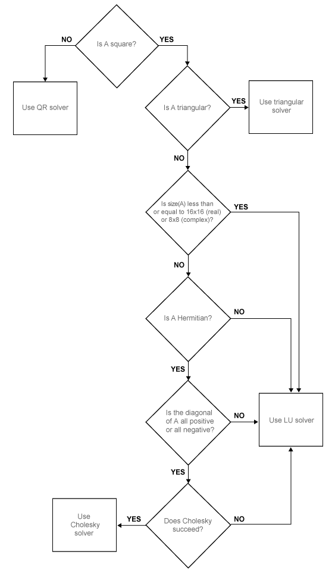

pagemldivide
Description
X = pagemldivide(A,B)A into each
page of N-D array B. Each page of the output array X
is given by X(:,:,i) = A(:,:,i) \ B(:,:,i). The pages of
A and B must be valid inputs to mldivide (\).
If A and B have more than three dimensions, then
all dimensions beyond the first two must have compatible sizes. pagemldivide implicitly expands the extra
dimensions to divide all page combinations: X(:,:,i,j,k) = A(:,:,i,j,k) \
B(:,:,i,j,k).
[
also returns an estimate of the reciprocal condition number of each page of
X,rcondA] = pagemldivide(___)A, using any of the input argument combinations in previous syntaxes.
If rcondA(1,1,i) < eps, then X(:,:,i) = A(:,:,i) \
B(:,:,i) returns a warning because the matrix is ill conditioned. However,
pagemldivide does not issue a warning for ill-conditioned
inputs.
Examples
Input Arguments
Output Arguments
More About
Page-wise functions like pagemldivide operate on 2-D
matrices that have been arranged into a multidimensional array. For example, the elements in
the third dimension of a 3-D array are commonly called pages because
they stack on top of each other like pages in a book. Each page is a matrix that the
function operates on.

You can also assemble a collection of 2-D matrices into a higher dimensional array, like a 4-D
or 5-D array, and in these cases pagemldivide still treats the
fundamental unit of the array as a 2-D matrix that the function operates on, such as
X(:,:,i,j,k,l).
The cat function is useful for assembling a
collection of matrices into a multidimensional array, and the zeros function is useful for preallocating a multidimensional array.
Tips
Results obtained using
pagemldivideare numerically equivalent to computing the linear system solutions with each of the same matrices in afor-loop. However, the two results might differ slightly due to floating-point round-off error.
Algorithms
Similar to mldivide, the pagemldivide function
determines which algorithm to use in solving the linear systems in the input array by applying
a series of checks to the array pages. Different algorithms can be used with different pages
in the input array. pagemldivide chooses between QR, Triangular, LU, and
Cholesky solvers for each array page in A depending on its properties, as
shown in this diagram.
